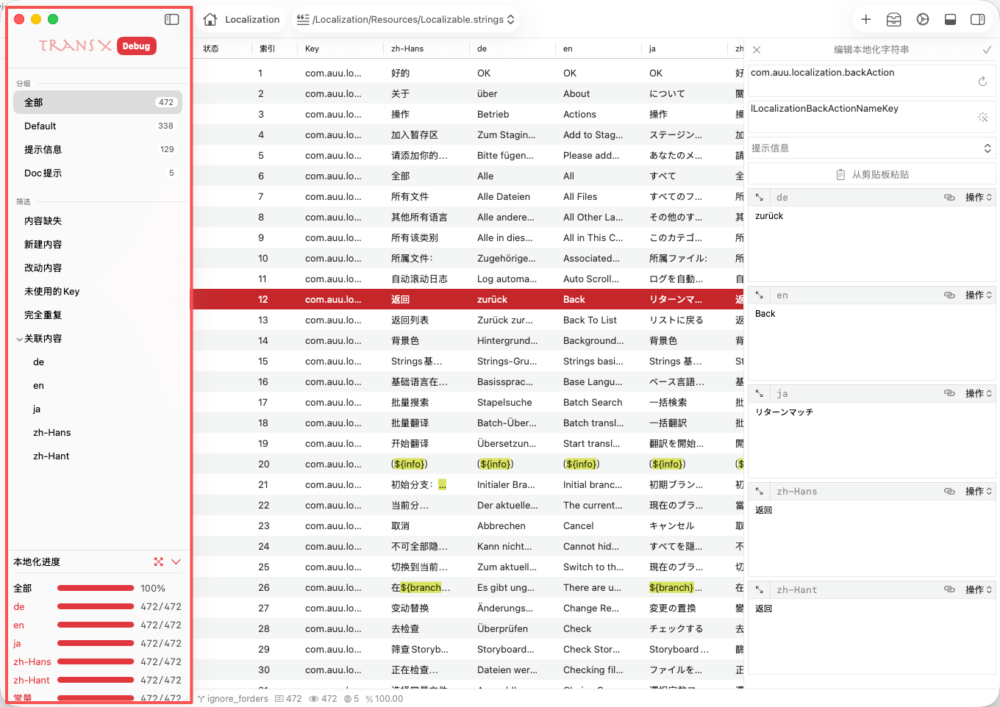
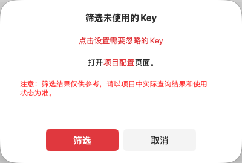
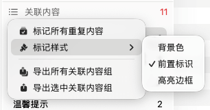
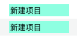
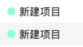

控制区位于主窗口左侧，是 TransX
多语言内容管理的核心导航区域。该区域以树形结构组织和展示项目中的所有本地化资源，提供了强大的分类、筛选和数据统计功能，帮助开发者高效管理
Xcode 项目中的 .strings 文件内容。
分组功能是 TransX 提供的多语言文案组织管理机制。在控制区顶部会以列表形式展示所有用户自定义的分组，每个分组项会实时显示该分组下包含的文案条目数量，便于快速评估各模块的本地化工作量。
在大型 iOS/macOS 项目开发中，.strings
文件往往包含数百甚至上千条本地化字符串。合理的分组管理能够：
根据不同的项目特点，可以采用多种分组策略：
按功能模块分组：
按内容类型分组：
按业务场景分组：
筛选功能是 TransX 的智能内容过滤系统，能够根据文案的不同状态和特征，快速定位需要处理的条目。在 Xcode 项目的本地化开发流程中，开发者经常需要处理各种特定场景的文案问题，筛选功能可以大幅提升问题定位和处理效率。
功能说明：
自动检测并显示所有存在内容缺失问题的多语言条目。缺失类型包括：
使用场景：
操作建议：
.strings 文件前，先使用此筛选检查一遍功能说明：
显示当前编辑会话中新创建的所有多语言文案条目。一旦用户执行导出操作，这些条目将从"新建内容"状态转为正常状态。
使用场景：
工作流程：
.strings 文件功能说明：
跟踪并显示在当前使用过程中被修改过的多语言条目。修改包括：
使用场景：
注意事项：

功能说明：
通过扫描项目源代码，检测在代码中未被引用的本地化字符串
Key。这个功能会分析
.swift、.m、.mm
等源代码文件，查找 NSLocalizedString
或类似的本地化调用。
使用场景：
.strings 文件体积，降低
App 包大小使用流程：
注意事项：
⚠️ 此筛选结果仅供参考，实际项目中可能存在：
- 动态字符串拼接：
NSLocalizedString("error_\(code)", comment: "")- OC 运行时调用：通过
performSelector等方式间接调用- 服务端配置：某些 Key 值由服务端下发
- 第三方库引用：被依赖的 framework 使用
删除前请务必进行人工确认和测试！
功能说明：
智能检测所有多语言条目中，所有语言的翻译文本都完全相同的情况。例如：
// 条目 A
Key: "button.submit"
en: "Submit"
zh-Hans: "提交"
// 条目 B
Key: "button.confirm"
en: "Submit"
zh-Hans: "提交"
// 以上两条会被识别为完全重复使用场景：
操作建议：
功能说明：
关联内容筛选采用蛛网式算法，以多语言文案为关联节点进行深度查找。只要任意语言的文本内容相同，即被认定为关联项，并通过传递性扩展关联范围。
算法示例：
条目 A: en="hello" zh-Hans="你好"
条目 B: en="hi" zh-Hans="你好"
条目 C: en="hi" zh-Hans="嗨"
条目 D: en="greeting" zh-Hans="嗨"
关联链：
A ←→ B (通过 zh-Hans 关联)
B ←→ C (通过 en 关联)
C ←→ D (通过 zh-Hans 关联)
结果：A、B、C、D 四个条目被识别为一个关联组使用场景：
高级选项：
实际应用案例：
在一个金融交易应用中，发现以下关联组：
"trade.buy.button" → "买入"
"order.buy.action" → "买入"
"market.buy.title" → "买入"通过关联内容分析，团队决定统一使用 "action.buy" 作为标准
Key，并在代码中进行重构，最终减少了 30% 的重复文案。
只有在执行"关联内容"筛选后，控制区才会展开显示关联内容详情面板。该面板会列出所有检测到的关联内容组，并提供详细的统计信息和操作选项。
每个关联内容组会显示该组包含的文案条目总数。

为了更直观地展示关联关系，TransX 提供了多种可视化标记方案，可通过左上角菜单访问：
选中状态：
在多语言文案列表中，会将关联组内所有相同的文案条目都进行标记，无论当前是否选中。这样可以一眼看出整个关联网络的全貌，便于全局分析。
未选中状态：
仅对当前选中的关联文案组进行标记，方便聚焦于特定条目的关联关系，避免信息过载。
使用建议：
背景色模式：

前置标识模式：

高亮边框模式：

全部导出：
导出格式支持：
当前组导出：
导出内容示例：
# 关联内容组 #3
## 基本信息
- 条目数量: 5
- 关联度: 85%
- 涉及语言: zh-Hans, en
## 详细列表
| Key | en | zh-Hans | 分组 |
|-----|----|----|------|
| error.network.timeout | Request timeout | 请求超时 | 错误信息 |
| alert.timeout | Request timeout | 请求超时 | 提示信息 |
...本地化进度区域提供了项目整体和各语言维度的翻译完成度统计，帮助项目管理者实时掌握本地化工作进展。
各语言进度：
语言名称 进度条 已翻译数/总数简体中文 +++++++--- 856/1024打开本地文件：
.strings 文件所在目录展开/收起：
项目管理：
质量保证：
多语言优先级：
单语言完成度 = (已填写内容的条目数 / 该语言总条目数) × 100%
整体完成度 = Σ(各语言完成度) / 支持的语言总数